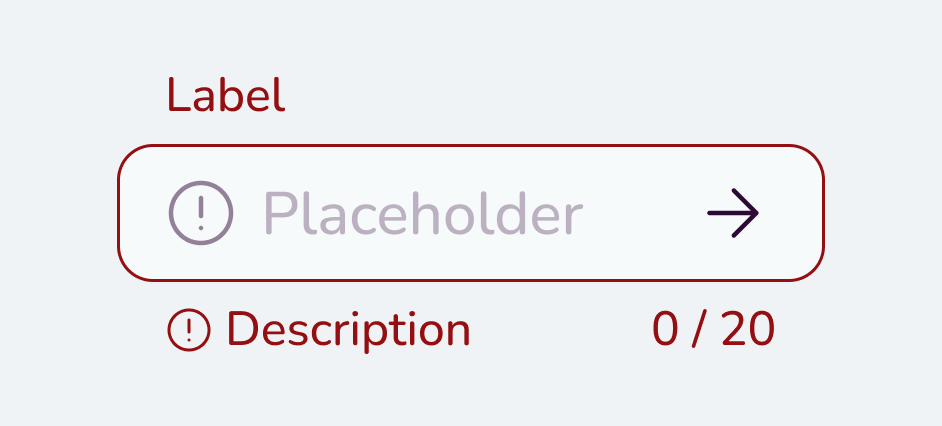

Текст написан темно-серым цветом.
Lc=80, этому цвету и начертанию необходим кегль минимум 16px.
Текст написан светло-серым цветом
Lc=27, этому цвету и начертанию необходим кегль минимум 83px.
Палитра этой дизайн-системы придерживается классических решений: светлый фон, темный текст, один брендовый цвет и три акцентных.
Контрастность сочетания цветов должна проверяться с помощью стандартов APCA, с учетом размера и начертания шрифта. Нормы показателя Lc совпадают с приведенными в калькуляторе. Фон для подложек и плашек не обязан проходить проверку контрастности, если при удалении фона структура страницы все еще ясна.
Текст написан темно-серым цветом.
Lc=80, этому цвету и начертанию необходим кегль минимум 16px.
Текст написан светло-серым цветом
Lc=27, этому цвету и начертанию необходим кегль минимум 83px.
Необходимо учитывать отличимость оттенков для близких в пространстве элементов. Советуем руководствоваться здравым смыслом и, при необходимости, величиной Delta E, которая должна для комфортной отличимости быть больше 10.

Delta E между всеми тремя используемыми цветами больше 10.
Delta E цвета placeholder и стрелки равна 7. Создается «визуальный дребезг».
Однако стоит полнее исследовать определение отличимости оттенков, так как приведенная метрика является нечувствительной к фону, таким образом не учитывая относительность цвета (color relativity, J. Albers), а также к площади цвета.
Ниже предоставлена цветовая палитра, которая может обеспечивать визуальное отображение сложной системы. По возможности необходимо использовать цвета, которые ниже обозначены как базовые (B).
Оттенки серого, а также цветов brand, accent 1, 2, 3 получаются при смешении цветов. Для сохранения гибкости дизайн-системы, в коде они реализованы через сложение с умножением на коэффициент прозрачности.
Выбраны холодный белый для большинства фонов, и темный цвет с уклоном в фиолетовый для основного объема текста. Оба цвета являются базовыми.
Палитра серого используется для основного интерфейса: светлые grey/5 and /10 (базовый) обеспечивают наслоение фонов в случае модальных окон, чекбоксов и т.д. Тёмные greys/90-/30 могут использоваться для текстов и иконок, при этом предпочтение отдается базовому оттенку grey/50. Количество оттенков серого для одного элемента должно быть сведено к минимуму.
Светлые и тёмные оттенки получаются смешиванием нейтральных цветов (dark и light) с основным цветом семейства (brand, accent 1, 2, 3). Название цвета состоит из названия семейства, процента прозрачности и нейтрального цвета. Названия основаны на долях цвета, а не на номерах, для удобства добавления новых оттенков в систему.
Яркий фирменный цвет с палитрой возможных оттенков. Должен быть использован для основного (целевого) действия, в случае интерактивных элементов является фоном для светлого текста. Базовыми являются основной цвет brand, brand 40D, brand 50L.
Для дополнительных элементов могут быть использованы акцентые цвета. Базовыми являются три средних оттенка (Accent 1, Accent 2, Accent 3).
Цвета обратной связи должны использоваться только в ответ на действия пользователя или в инструкциях для того, чтобы показать пример неверных и верных действий.
Слишком короткий пароль. Длина пароля — 6 символов или больше.
Товара нет в наличии.
Это сообщение не является ошибкой и не должно выделяться красным цветом, так как пользователь не может повлиять на наличие товара.
Чтобы показать успешность действия или пример успешного действия. Например: форма успешно заполнена.
Чтобы показать некритичную ошибку, которая может быть исправлена, или пример приемлемого, но не идеального действия. Например: Отправить форму без вашего телефона? Вам не смогут позвонить в случае отмены мероприятия.
Чтобы показать критичную ошибку, которая должна быть исправлена, или пример неверных действий. Например: Слишком короткий пароль. Длина пароля должна быть от 6 символов и более.
Для состояний текстовых ссылок. Классика.
Используются для фонов и подложек для элементов, которые должны привлекать внимание пользователя. Такие элементы должны быть достаточного размера (одно из измерений более 100px). На одном экране пользователя (то есть на высоте 1000px) не должно встречаться два элемента с градиентом, чтобы не создавать приоритетной путаницы.
Для элементов на подложке необходимо провести две проверки контрастности по описанному ранее методу APCA для обоих цветов градиента. Этого будет достаточно, так как в линейном градиенте все светимости промежуточных оттенков попадает в интервал между светимостей двух крайних цветов.
Должны содержать ровно два цвета, один на позиции 0%, второй на позиции 100%.
. Смещены опорные точки
. Больше двух цветов
Цвета могут быть взяты из семейств Grey, Brand, Accent 1, Accent 2, Accent 3. Если один из цветов градиента из семейства Grey, то второй должен быть также оттуда, а остальные семейства можно сочетать друг с другом. Правило сочетания: два цвета должны принадлежать одной или соседним ступеням (соседними считаются, например, ступени 15L и 50L).
. Цветное с серым
:root {
/* Color styles */
--main--light: rgba(246, 250, 251, 1);
--main--dark: rgba(45, 9, 53, 1);
--grey--3: rgba(240, 243, 245, 1);
--grey--10: rgba(226, 226, 232, 1);
--grey--20: rgba(206, 202, 212, 1);
--grey--30: rgba(187, 177, 193, 1);
--grey--50: rgba(147, 129, 154, 1);
--grey--70: rgba(108, 80, 116, 1);
--grey--90: rgba(68, 32, 77, 1);
--brand--brand: rgba(172, 27, 205, 1);
--brand--accent-1: rgba(210, 52, 131, 1);
--brand--accent-2: rgba(27, 152, 205, 1);
--brand--accent-3: rgba(255, 212, 0, 1);
--brand--brand--40-d: rgba(96, 16, 114, 1);
--brand--brand--50-l: rgba(209, 139, 228, 1);
--brand--brand--70-d: rgba(134, 22, 159, 1);
--brand--brand--20-d: rgba(70, 13, 83, 1);
--brand--brand--15-l: rgba(235, 217, 244, 1);
--brand--brand--5-l: rgba(242, 239, 249, 1);
--brand--accent--3-5-l: rgba(246, 248, 238, 1);
--brand--accent--3-15-l: rgba(247, 244, 213, 1);
--brand--accent--3-50-l: rgba(251, 231, 126, 1);
--brand--accent--3-70-d: rgba(192, 151, 16, 1);
--brand--accent--3-40-d: rgba(150, 111, 26, 1);
--brand--accent--3-20--d: rgba(87, 50, 42, 1);
--brand--accent--2-20-d: rgba(41, 38, 83, 1);
--brand--accent--2-40-d: rgba(38, 66, 114, 1);
--brand--accent--2-70-d: rgba(32, 109, 159, 1);
--brand--accent--2-50-l: rgba(137, 201, 228, 1);
--brand--accent--2-15-l: rgba(213, 235, 244, 1);
--brand--accent--2-5-l: rgba(235, 245, 249, 1);
--brand--accent--1-20-d: rgba(78, 18, 69, 1);
--brand--accent--1-40-d: rgba(111, 26, 84, 1);
--brand--accent--1-70-d: rgba(160, 39, 108, 1);
--brand--accent--1-50-l: rgba(228, 151, 191, 1);
--brand--accent--1-15-l: rgba(241, 220, 233, 1);
--brand--accent--1-5-l: rgba(244, 240, 245, 1);
--feedback--danger--light: rgba(243, 204, 204, 1);
--feedback--danger--medium: rgba(235, 32, 35, 1);
--feedback--danger--dark: rgba(148, 15, 17, 1);
--feedback--warning--light: rgba(246, 239, 185, 1);
--feedback--warning--medium: rgba(255, 227, 28, 1);
--feedback--warning--dark: rgba(156, 138, 12, 1);
--feedback--success--light: rgba(192, 236, 188, 1);
--feedback--success--medium: rgba(67, 208, 55, 1);
--feedback--success--dark: rgba(43, 130, 35, 1);
--link--link: rgba(48, 39, 221, 1);
--link--hover: rgba(45, 39, 169, 1);
--link--active: rgba(20, 17, 86, 1);
--link--visited: rgba(110, 35, 138, 1);
}
let colorMixStr = ["color-mix(in lab, var(",")"];
function colorMixCSS (c1,c2,p1) {
p1-=3;
let p2=100-p1;
return (colorMixStr[0]+c1+") "+p1+"%, var("+c2+") "+colorMixStr[1]);
}
//colorsContainer[0].style.backgroundColor = colorMixCSS("--main--dark","--main--light",50);
let colorsContainer = document.getElementsByClassName("colors-container");
//создаем карточку цвета
function createColorCard (name, hex, base) {
let colorBlock = document.createElement('li');
let colorShow = document.createElement('div');
colorShow.style.backgroundColor = "#"+ hex;
let colorName = document.createElement('span');
colorName.textContent = name;
let colorHEX = document.createElement('span');
colorHEX.textContent = "#"+ hex;
if (base) {
let spanBase = document.createElement('span');
spanBase.textContent = "B";
colorShow.append(spanBase);
}
colorBlock.append(colorShow);
colorBlock.append(colorName);
colorBlock.append(colorHEX);
let copied = "#"+ hex;
colorBlock.addEventListener('click', listenerCopy(colorBlock,copied,colorShow,'<img src="images/icons/copy.svg">'));
return colorBlock;
}
function hextorgb (hex) {
let rgb=[];
rgb.push(parseInt(hex.substr(0,2), 16));
rgb.push(parseInt(hex.substr(2,2), 16));
rgb.push(parseInt(hex.substr(4,2), 16));
//console.log(rgb);
return(rgb);
}
function baseMix (c_trans,c_base,p) {
let percent = p/100;
let mix10 = c_trans*percent+c_base*(1-percent);
let mix16 = ((Math.floor(mix10)).toString(16));
while (mix16.length < 2) mix16=0+mix16;
return mix16;
}
function rgbMix (c1,c2,p) {
let rgb=[];
rgb.push(baseMix(c1[0],c2[0],p));
rgb.push(baseMix(c1[1],c2[1],p));
rgb.push(baseMix(c1[2],c2[2],p));
//console.log(rgb[0]+rgb[1]+rgb[2]);
return (rgb[0]+rgb[1]+rgb[2]);
}
let colorLight = "F6FAFB";
let colorDark = "300739";
let colorBrand = ["AC1BCD","1B98CD","FFD400","D23483"];
let colors = [
["main",[["light",colorLight,true],["dark",colorDark,true]]],
["grays",[]],
["brand",[]],
["brand1",[]],
["brand2",[]],
["brand3",[]],
["success",[["success light","C0ECBC",true],["success medium","43D037",true],["success dark","2B8223",true]]],
["warning",[["warning light","F6EFB9",true],["warning medium","FFE31C",true],["warning dark","9C8A0C",true]]],
["danger",[["danger light","F3CCCC",true],["danger medium","EB2023",true],["danger dark","940F11",true]]],
["link",[["link","3027DD",true],["link hover","2B24A3",true],["link active","141156",true],["link visited","6E238A",true]]],
]
let grays = [[90,false],[70,false],[50,true],[30,false],[20,false],[10,true],[3,true]];
let brand = [[["brand"],[[5,false],[15,false],[50,true]],[[70,false],[40,true],[20,false]]],
[["brand1"],[[5,false],[15,false],[50,false]],[[70,false],[40,false],[20,false]]],
[["brand2"],[[5,false],[15,false],[50,false]],[[70,false],[40,false],[20,false]]],
[["brand3"],[[5,false],[15,false],[50,false]],[[70,false],[40,false],[20,false]]]];
//вставляем в массив серые
for (let i=0; i<grays.length; i++) {
let hex = rgbMix(hextorgb(colorDark),hextorgb(colorLight),grays[i][0]);
colors[1][1].push([grays[i][0],hex,grays[i][1]]);
}
//вставляем в массив брендовые
for (let j=0;j<brand.length;j++){
for (let i =0;i<brand[j][1].length;i++) {
let name = brand[j][0] + " " + brand[j][1][i][0] + "L";
let hex = rgbMix(hextorgb(colorBrand[j]),hextorgb(colorLight),brand[j][1][i][0]);
colors[2+j][1].push([name,hex,brand[j][1][i][1]]);
}
colors[2+j][1].push([brand[j][0],colorBrand[j],true]);
for (let i =0;i<brand[j][2].length;i++) {
let name = brand[j][0] + " " + brand[j][2][i][0] + "D";
let hex = rgbMix(hextorgb(colorBrand[j]),hextorgb(colorDark),brand[j][2][i][0]);
colors[2+j][1].push([name,hex,brand[j][2][i][1]]);
}
}
//вставляем все цвета на страницу
for (let i=0;i<colors.length;i++) {
let place = colorsContainer[i];
for (let j =0;j<colors[i][1].length;j++) {
let c = createColorCard(colors[i][1][j][0],colors[i][1][j][1],colors[i][1][j][2]);
place.append(c);
}
}